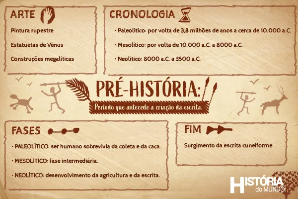

Períodos
A Pré-História é tradicionalmente dividida em três grandes períodos: o Paleolítico (Idade da Pedra Lascada), o Mesolítico (período de transição) e o Neolítico (Idade da Pedra Polida), que culmina com o surgimento da escrita e o início da História. Alguns historiadores também incluem a Idade dos Metais como um período final da Pré-História, caracterizado pela manipulação de metais para criar ferramentas e armas.
- Paleolítico — nômades, caça e coleta.
- Neolítico — agricultura, sedentarismo.
- Idade dos Metais — bronze e ferro.
O Paleolítico foi um longo período da pré-história onde os seres humanos viviam como nômades, deslocando-se constantemente em busca de alimento e abrigo. Sua subsistência baseava-se na caça de animais, na pesca e na coleta de vegetais, com o uso de ferramentas de pedra lascada para auxiliá-los nessas atividades. O domínio do fogo, descoberto no final deste período, foi um avanço crucial para o aquecimento, cozinha e proteção contra animais.
O Neolítico, ou "Pedra Nova", foi um período da Pré-História (aproximadamente 10.000 a.C. a 3.000 a.C.) marcado pela Revolução Agrícola, com o desenvolvimento da agricultura e domesticação de animais, o que levou à sedentarização e ao surgimento das primeiras aldeias e cidades. Surgiu também a pedra polida para ferramentas, o uso de cerâmica e tecidos, e estruturas de organização social e política mais complexas
A Idade do Bronze e a Idade do Ferro são períodos da Idade dos Metais, o último da Pré-História, caracterizados pelo domínio da metalurgia para fabricar ferramentas, armas e utensílios mais resistentes. A Idade do Bronze (aproximadamente 3300 a.C. – 1200 a.C.) envolveu a descoberta do bronze, uma liga de cobre e estanho, enquanto a Idade do Ferro (a partir de 1200 a.C.) é marcada pelo uso do ferro, um metal que exigia técnicas de fundição mais complexas e que possibilitou o desenvolvimento de sociedades mais avançadas
Primeiras civilizações
As primeiras civilizações surgiram por volta de 4.000 a.C., em regiões com rios férteis como a Mesopotâmia (Tigre e Eufrates), Antigo Egito (Nilo), Vale do Indo e China Antiga (Rio Amarelo). O desenvolvimento da agricultura e a vida sedentária permitiram a formação de cidades-estado, governos centralizados, especialização do trabalho, e a invenção da escrita, como a cuneiforme e os hieróglifos, que foram fundamentais para a organização social e o desenvolvimento cultural e tecnológico.

- Mesopotâmia
- Egito
- Vale do Indo
- China
A Mesopotâmia é uma das primeiras civilizações conhecidas e desenvolveu-se entre os vales dos rios Tigre e Eufrates, atualmente onde é o território da Síria e, principalmente, do Iraque. Seu surgimento se deu por volta do ano 5.000 a.C. Ao longo de aproximadamente 4.500 anos, foi habitada por diversos povos que ora conviviam em harmonia, ora se confrontavam. Entre eles, podemos citar os sumérios, acádios, amoritas (ou antigos babilônios), assírios e caldeus (ou novos babilônios)
O Egito, oficialmente República Árabe do Egito, é um país transcontinental localizado no nordeste da África e no sudoeste da Ásia, por meio da Península do Sinai. Sua história milenar e rica cultura atraem turistas de todo o mundo, com monumentos como as pirâmides de Gizé, o Rio Nilo e os templos faraônicos.
A Civilização do Vale do Indo, também conhecida como Civilização Harappeana, foi uma das civilizações mais antigas do mundo, florescendo no noroeste da Índia e no atual Paquistão, entre 3300 a.C. e 1300 a.C.. Ela foi contemporânea ao Egito Antigo e à Mesopotâmia, mas se destacou por ser a de maior extensão geográfica entre as três. F
A China, oficialmente República Popular da China, é um país com uma das civilizações mais antigas e contínuas do mundo, com uma história de mais de 5 mil anos. É a segunda nação mais populosa do planeta e a segunda maior economia do mundo.